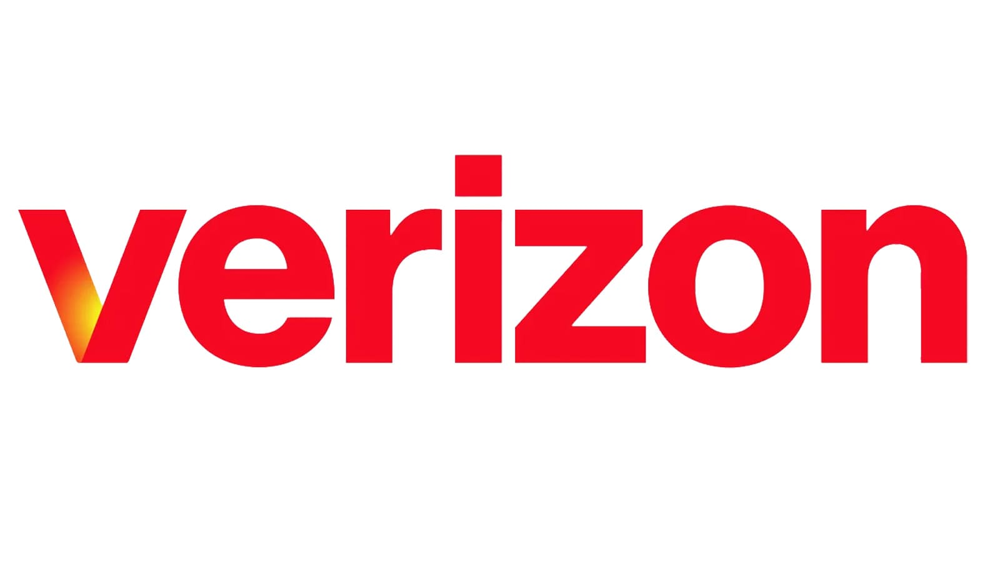

André Henry
Cybersecurity | IT Administration | Network Automation
Education

M.Sc. Information Technology Administration and Security (2025 - 2026)
B.Sc. Information Technology (2021 - 2025)
Experience

Network Automation Engineer Intern
Cary, North Carolina | June 2024 - August 2024
Worked on automation projects: Vendor Log Collector API & Workflow Intake System
Skills
- Networking (TCP, Wireshark, Cisco Packet Tracer)
- Web Development (Flask, FastAPI, MySQL, PHP, RabbitMQ)
- Programming (Python, Bash, C#, SQL, Java, HTML/CSS, JavaScript, C++)
- Cybersecurity Tools (Kali Linux, Metasploit, Nmap, John the Ripper)
- System Integration & Automation (Penetration Testing, Load Balancing, Vulnerability Assessment)